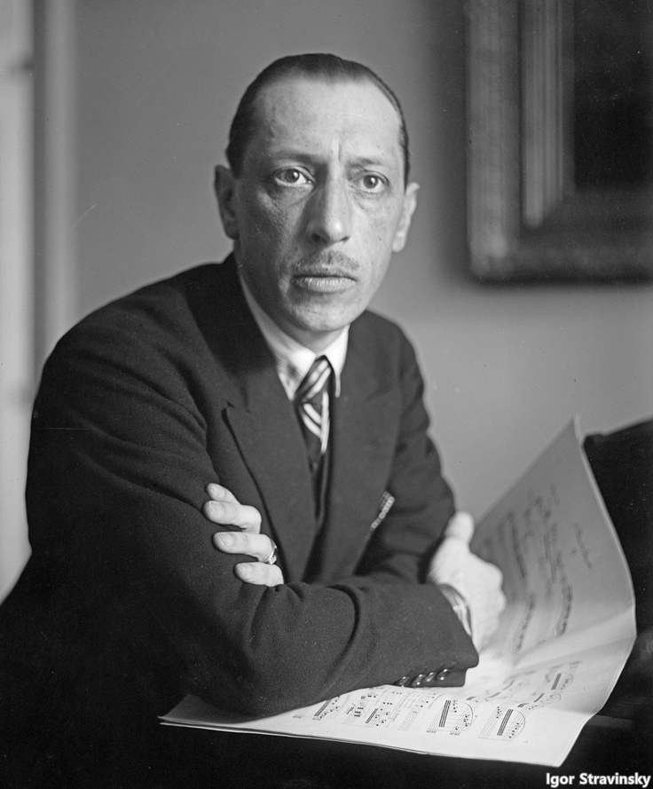
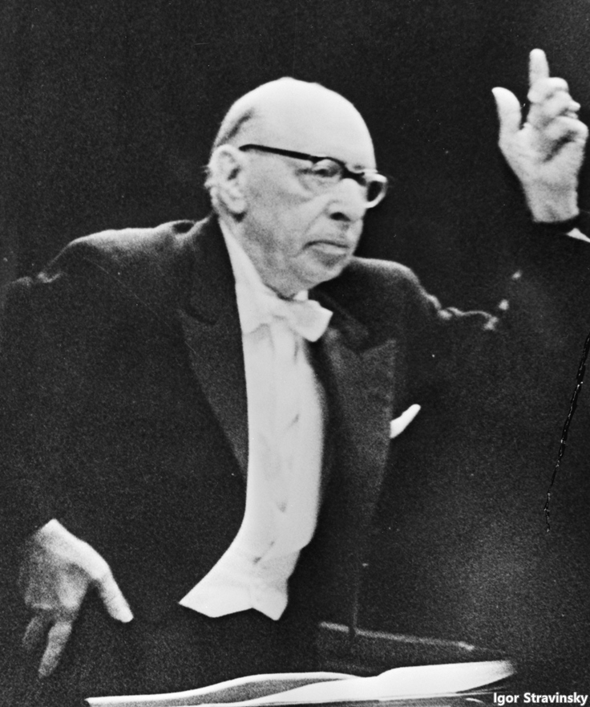

20세기를 대표하는 음악가 Igor Stravinsky(이고르 스트라빈스키)에게는 다른 이들에게는 없는
놀라운 재능이 있었습니다. 바로 자신을 어떻게 선보일지에 대한 날카로운 감각이 그것이었죠.
실제로 그는 삶을 어렵게 살아냈던 여러 작곡가들과는 달리 냉철한 표정으로, 삶의 난해한
면모들을 가볍게 처리해 나가며 성공을 거두었습니다.

그러나 스트라빈스키가 이룩한 성공은 그가 자기 혁신을 끊임없이 이루어낸 작곡가였기에 가능한 성취이기도
했습니다. 반세기가 넘는 기나긴 창작 기간 동안, 스트라빈스키는 몇 번이나 자신의 스타일을 바꿔가며 시대와
발맞추려는 노력을 멈추지 않았습니다. 마침 올해 2021년은 1971년 세상을 떠난 작곡가의 사후 50주년을
맞이하는 해입니다. 생전에도 거장이었던 작곡가의 명성은 50년이 지난 지금 어디에 위치해 있을까요?
스트라빈스키의 현재를 아래서 만나보세요.
위대한 베이스 가수였던 아버지는 아들이 음악을 하기를 바라지 않았지만 스트라빈스키는 순순히 아버지의
말을 들을 인물은 아니었습니다. 그때 억지 법대생이었던 스트라빈스키 앞에 Rimsky-Korsakov(림스키 코르사코프)
라는 이름이 서게 됩니다.
상트페테르부르크의 법학도였던 스트라빈스키는 림스키 코르사코프를 만난 이후 음악 공부에 매진할 수
있었고, 스승이 세상을 떠나자 한 사람의 독립된 작곡가로 세상에 설 수 있었습니다.
위에 연주되는 스트라빈스키의 '장송곡 (Funeral Song)'은 1908년, 스승이었던 림스키
코르사코프의 죽음 이후 쓴 작품입니다. 스승이었던 림스키 코르사코프는 물론, 선배 작곡가인 스크리아빈의
느낌도 적지 않게 흐르는 '장송곡 (Funeral Song)'은 그러나 단 한차례만이 연주되고 이후 역사 저편으로
사라지게 됩니다. 러시아 혁명 이후 체계가 혼란스러워지면서 작품의 악보 또한 분실된 것이었죠. 그로부터
100여년이 지난 2015년에 놀라운 일이 벌어집니다. 스트라빈스키가 공부했던 상트페테르부르크 음악원
도서관에서 근무하고 있던 사서는 미분류된 악보 더미에서 스트라빈스키의 '장송곡 (Funeral Song)'으로
추정되는 악보를 발견하게 됩니다. 발견된 악보는 이후 전문가의 도움을 받아 최종 형태로 정리되어 2016년
Valery Gergiev(발레리 게르기예프)가 지휘하는 마린스키 극장 오케스트라의 연주로 다시 무대에 올라갔고,
이번에는 Yannick Nezet-Seguin(야닉 네제 세겐)과 The Philadelphia Orchestra
(필라델피아 오케스트라)의 연주로 이렇게 녹음되었습니다. 사후 50주년을 맞이한 2021년에도 스트라
빈스키는 여전히 자신의 유산을 현재로 불러들이는 거인입니다.
스트라빈스키는 이른바 발레 3부작인 "불새", "봄의 제전", "페트루슈카" 같은 작품을 연이어 선보이며
1910년대를 자신의 시대로 만들었습니다. 뛰어난 인재들이 저마다의 재능을 선보이는 가운데 일단은
스트라빈스키의 이름이 먼저 호명되는 시대였죠. 스트라빈스키는 그 자체로 러시아의 전통과 현대적인
기법이 만나는 곳이었습니다.
네덜란드의 형제 피아니스트 듀오인 Lucas Jussen, Arthur Jussen(유센 형제)이 연주하는
[두 대의 피아노를 위한 협주곡]이 바로 이 시기의 작품입니다. 제목에는 협주곡이라 되어 있지만 이
작품은 오케스트라와 협연하는 협주곡이 아닌, 두 대의 피아노를 위한 듀엣입니다. 신선한 화성에 다소
요란한 음향이 전시되는 작품이지만 마지막 부분을 바로크 음악의 주요 배치인 프렐류드와 푸가로 마무리한
부분들에서 스트라빈스키의 고전 사랑을 엿볼 수 있는 작품이기도 합니다.

스트라빈스키는 오랜 기간 지속적인 영향력을 행사한 음악가였고, 그렇기에 대표작의 수도 적지 않습니다.
작품의 하나하나의 길이도 비교적 긴 편이죠.
스트라빈스키 입문이 쉽지 않은 분들은 정성 들여 만든 컴필레이션 앨범의 도움을 받는 것도 좋겠습니다.
앨범 [Stravinsky: Essentials]에는 위에 언급한 발레 3부작을 포함하는 스트라빈스키의 대표작
25곡이 수록되어 있습니다. 작품의 전곡이 아닌 하이라이트만이 실려 있지만 "스트라빈스키는 이런 음악가였군."
이라는 인상을 심어주는데 충분한 좋은 모음집이죠.
위의 앨범이 훌륭한 컴필레이션임에도 불구하고 부족한 부분은 여전히 존재합니다. 1950년대가 되었을 때
스트라빈스키는 또 한 번의 음악적 변화를 시도합니다. 다른 이들은 은퇴를 하고도 남을 시점에 쇤베르크
같은 작곡가들이 공들여 구축한 음렬 기법으로 새로운 작품을 쓰게 된 것이죠.
안타깝게도 스트라빈스키의 후기 작품은 상대적으로 난해하다는 평가를 받기에 그다지 연주되지 않습니다만,
그래도 이 시기 작품 중에서도 어렵지 않게 들을만한 작품이 있어 소개하고자 합니다. 1953년에 작곡된
[7중주]는 음렬 주의의 영향을 받아쓴, 비교적 짧은 길이의 아기자기한 작품입니다. 여러 악기들이
오밀조밀하게 모여 열심히 음표를 주고받는 느낌이 귀엽다는 생각까지 들 정도이니 이번 기회에 부담 없이
감상해 보시는 건 어떨까요?